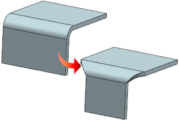
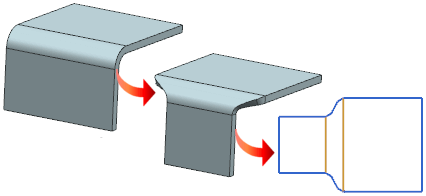
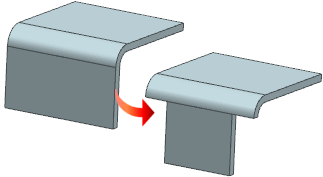

When you use the Bend Taper command, the following taper options are now available.
Linear
Creates a taper using the specified taper angle or taper distance value.
The resulting feature is the same as the existing Bend Taper feature. All legacy Bend Taper features will be converted to the Linear type of Bend Taper feature with the specified taper angle.
The following example shows a symmetric linear taper applied to the bend with a taper angle of 45 degrees.

Tangent
In the flattened view, the taper is tangent to the web on both sides.
The following example shows a symmetric tangent taper applied to the bend with a taper distance of 10 mm.

Square
Removes material from the web up to the specified distance. No taper is applied to the selected bend.

You can now specify the taper parameters for the bend and web of each taper side independently using the options available in the Taper Definition Side 1 and Taper Definition Side 2 groups.
The Chaining options available in the previous Bend Taper dialog box are replaced with the following options, and renamed as shown.
|
Chaining options |
Taper options |
||
|
Bend Only |
None |
||
|
Bend Face |
Face |
||
|
Bend Face Chain |
Face Chain |
||
Use these options to remove material from the bend and web regions.
|
Application |
NX Sheet Metal |
|
Toolbar |
NX Sheet Metal→Cut Drop–down list→Bend Taper |
|
Menu |
Insert→Cut→Bend Taper |
|
Location in dialog box |
Taper Definition Side 1 or Taper Definition Side 2 group→Bend subgroup→Taper list |